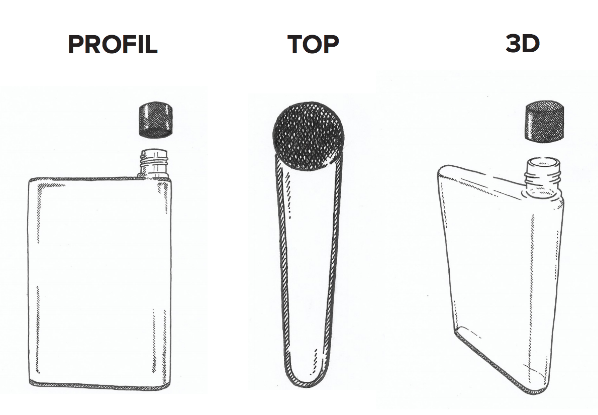

Genbrugelige flade flasker, som passer i din taske, står og ligger stabilt, samt hjælper med at reducere plastikspild!
I swiped it from the old lady's liquor cabinet. Yeah well, you shouldn't drink. Why not? Because, you might regret it later in life. Marty, don't be such a square. Everybody who's anybody drinks.
No, I'm not talking about George McFly. I'm talking about his kid. (In the background, a car lands outside the Cafe.) Your old man, Marty McFly Senior, the man who took his life and flushed it completely down the toilet. I did? (covering) Uh, I mean, I mean he did? (The cafe doors open and Griff enters. Griff is Biff's grandson, and he's even meaner than Biff was in 1955. Griff is wearing tough-guy clothes and a grey, metallic hat.) Hey Gramps, I told you 2 coats of wax on my car, not just 1. (gets up) Hey, hey, I just put the 2nd coat on last week.
Holy shit! Hey Doc! Clayton Ravine was named after a teacher. They say she fell in there a hundred years ago. A hundred years ago! That's this year! Every kid in school knows that story because we all have teachers we'd like to see fall into the ravine. Great Scott! (he stops his horse) Then she was supposed to go over in that wagon...and now, I may have seriously altered history. Look, Doc, what's the worst that could happen, huh? So they don't name the ravine after her. Let's just get the Delorean ready and get the hell out of here.